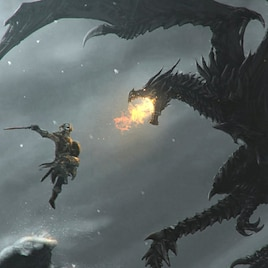

The Elder Scrolls V: Skyrim é um jogo eletrônico de RPG de ação desenvolvido pela Bethesda Game Studios e publicado pela Bethesda Softworks. É o quinto jogo principal da série The Elder Scrolls, seguindo The Elder Scrolls IV: Oblivion. Foi lançado em 11 de novembro de 2011 para Microsoft Windows, PlayStation 3 e Xbox 360. É o primeiro jogo ocidental da história a receber 40/40 (nota máxima) na conceituada Famitsu. O jogo conseguiu três prêmios no VGA 2011, incluindo Jogo do Ano.
Sinopse do Enredo

O jogador entra na pele do último Dovahkiin, que tem o dever de livrar a província de Skyrim da tormenta causada pelos dragões e seu líder Alduin. O jogo se passa duzentos anos depois dos eventos de Oblivion. Na premissa, o Império começa a ceder territórios para as nações Élficas uma vez governadas, porque não há nenhum herdeiro para o trono do Imperador. Os Blades não tem ninguém para defender, e gradualmente morreram, foram assassinados ou se isolaram do resto do mundo. Depois do assassinato do Rei de Skyrim, uma guerra civil surge entre as raças nativas, Nord — sendo a maioria aqueles que desejavam que Skyrim se separe do Império, e o resto sendo aqueles que desejam que Skyrim permaneça no Império.
Como os jogos Elder Scrolls anteriores, Skyrim começa com o personagem do jogador como um prisioneiro desconhecido, condenado por cruzar a fronteira e ser confundido com um Stormcloak.Tendo que enfrentar, nesse novo capítulo da série, Alduin. Alduin foi, em tempos remotos, o líder dos dragões que dominavam o mundo e escravizavam todos os seres humanos, até que um dia foi derrotado por nórdicos. Depois da derrota de Alduin, os outros dragões começaram a serem mortos, isso, muito tempo antes da história que o jogador vive em Skyrim. O personagem do jogador é o último Dragonborn (Nascido do Dragão), um caçador de dragões que tem o objetivo de afastar a ameaça que Alduin representa para Skyrim e Tamriel. Ajudando o jogador está Esbern e Delphine talvez os últimos Blades vivos.
Mundo
O jogo se passa em Skyrim, uma província localizada do norte de Tamriel, continente onde todos os jogos da série The Elder Scrolls se passaram. Skyrim é praticamente do mesmo tamanho que Cyrodiil, o mundo onde se passa o quarto jogo da série, The Elder Scrolls: Oblivion, que tem 41 quilômetros quadrados em área. Muito da topografia de Skyrim é montanhosa, e o jogador pode se deparar tanto com cenários completamente cobertos de neve, quanto visitar planícies verdejantes e vastas. e quando o jogador entra em um calabouço pela primeira vez, os monstros do local se travam ao nível do jogador permanentemente, mesmo se visitados depois com um nível mais alto. Viagens rápidas é um aspecto que retorna, permitindo que o jogador viaje instantaneamente para qualquer locação marcada que foi anteriormente visitada.
Dragões
Os lendários dragões têm uma influência particular na jogabilidade e na história, e são oponentes marcantes para o jogador. Dragões podem aparecer em qualquer momento, em qualquer lugar (exceto dentro de casas/tavernas/palácios/cavernas) e podem atacar qualquer coisa. Raças diferentes de dragões são encontradas por Skyrim. Eles podem falar diretamente com o jogador através da língua nativa do mundo, Dracônica. Dragões podem atacar cidades e vilarejos aleatoriamente, devastando cidades sem aviso prévio; frequentemente, dragões mergulham para o chão, marcham através das ruas das cidades e podem cuspir fogo ou gelo, que envolve e provoca danos significativos às estruturas da cidade. Nem todos os dragões são hostis.